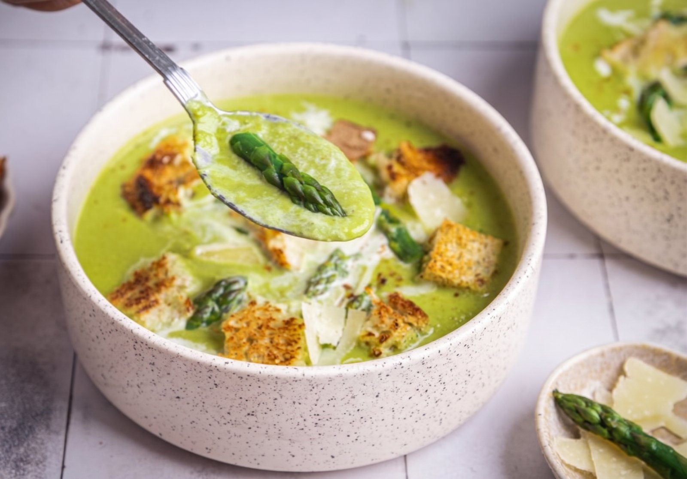

Úvod › Recepty › Krémová chřestová polévka s parmazánem
{{msg}}

Zelený chřestPolévka
Krémová chřestová polévka s parmazánem
{{avgTxt}}{{countTxt}}⏱ 35 minPorce: neuvedenoRecept: Forbescooking · foto: Markéta Marešová
Suroviny
- 800 g zeleného chřestu
- 400 g kuřecího či zeleninového vývaru
- 1 menší cibule
- 3 lžičky ghí
- 4 stroužky česneku
- kůra z jednoho chemicky neošetřeného citronu
- hrst bazalky
- 3 snítky tymiánu
- snítka rozmarýnu
- hrst baby špenátu
- 50 g parmazánu
- 80 g smetany ke šlehání
- sůl a pepř
Postup
- Cibuli nakrájejte nadrobno a na rozehřátém ghí ji nechte zesklovatět. Přidejte na plátky pokrájený česnek a lehce ho opečte.
- Z chřestu odřízněte špičky na ozdobu, zbytek pokrájejte a 2 minuty opékejte. Zalijte studeným vývarem, osolte, opepřete, přidejte citronovou kůru a bylinky a vařte pod pokličkou asi 15 minut.
- Přidejte špenát, nechte zavadnout a rozmixujte dohladka. Zjemněte smetanou, naposledy zahřejte a vmíchejte parmazán.
- Dochuťte. Chřestové špičky vařte minutu v osolené vodě a prudce zchlaďte ledovou vodou.
- Podávejte se špičkami, krutony a parmazánem.
Jak vám chutnalo?
Průměr {{avgTxt}} z 5 · {{countLong}}Hlasovat může kdokoli bez registrace, jeden hlas na recept z jednoho prohlížeče. Hodnocení jde později změnit. Hvězdičky se zobrazují i na kartách v přehledu receptů.